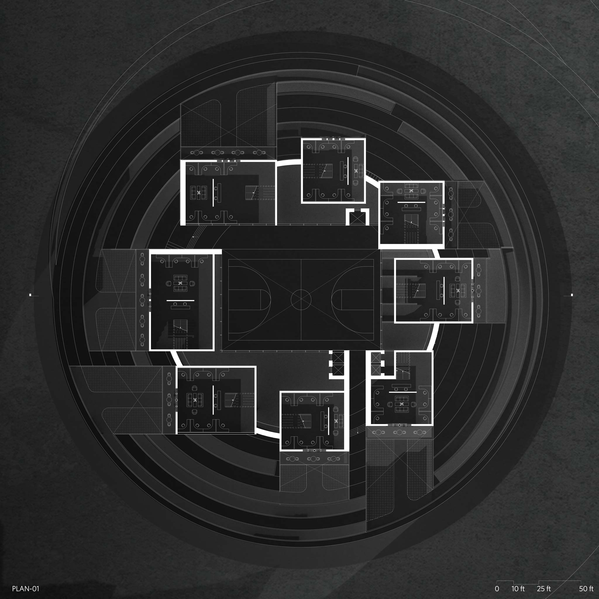
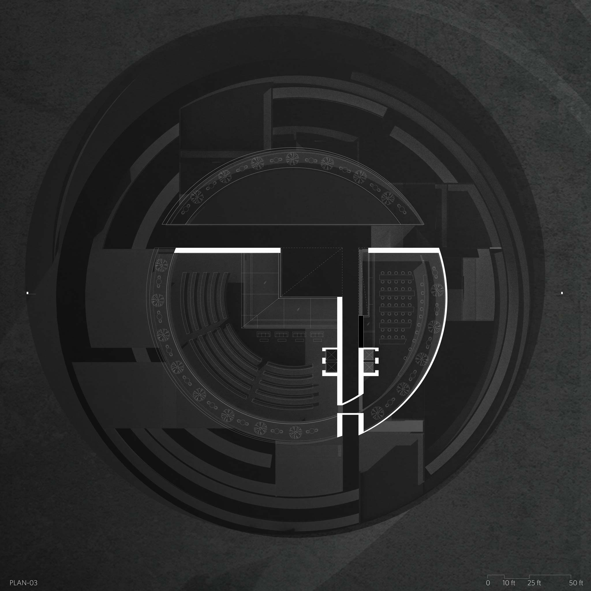
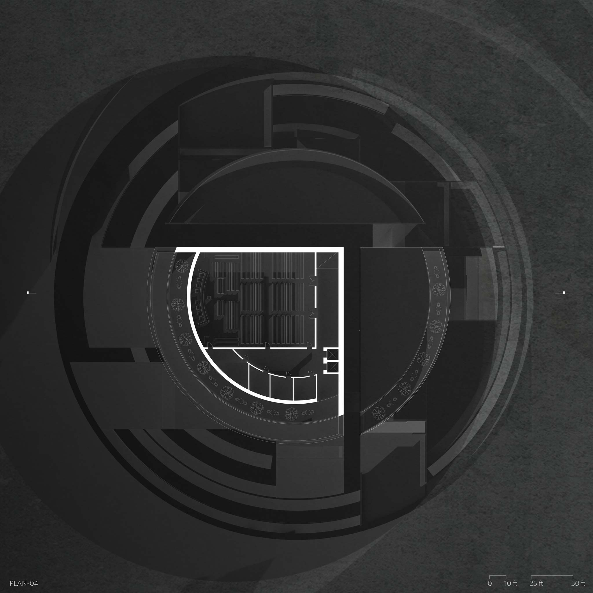
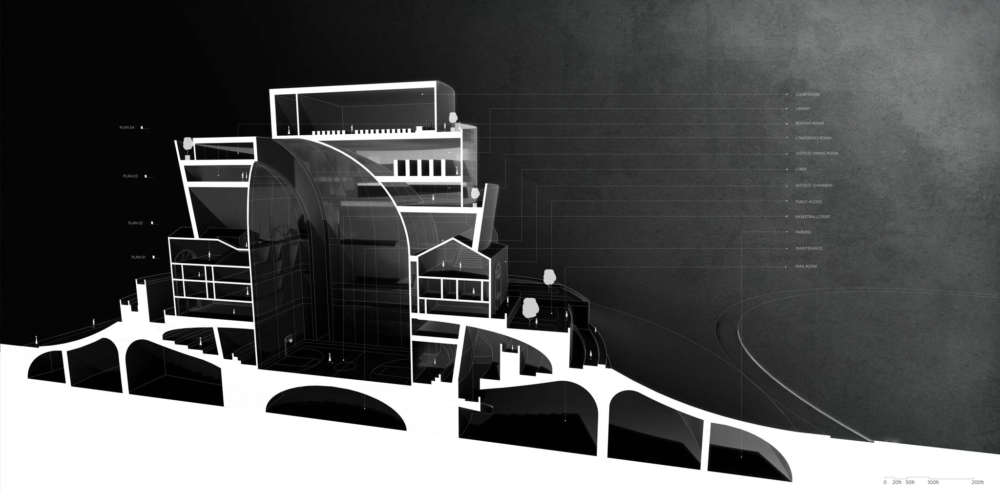
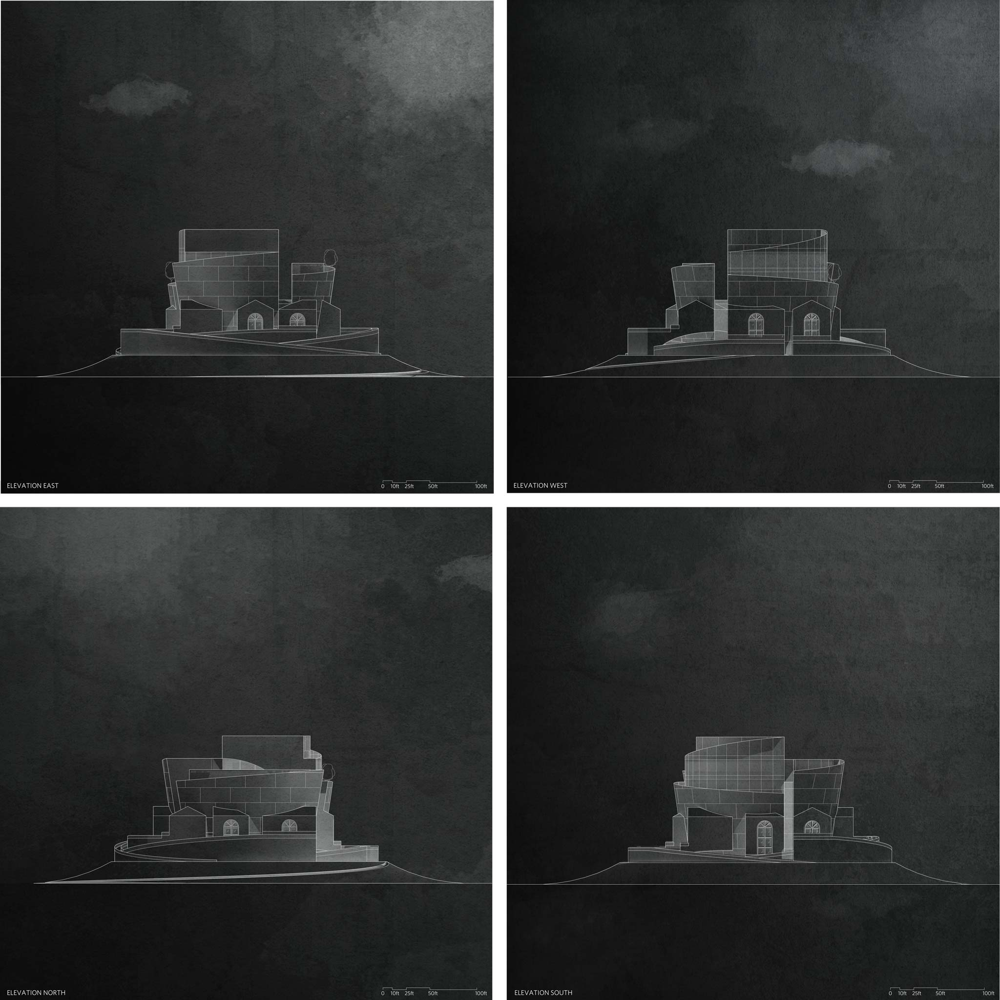
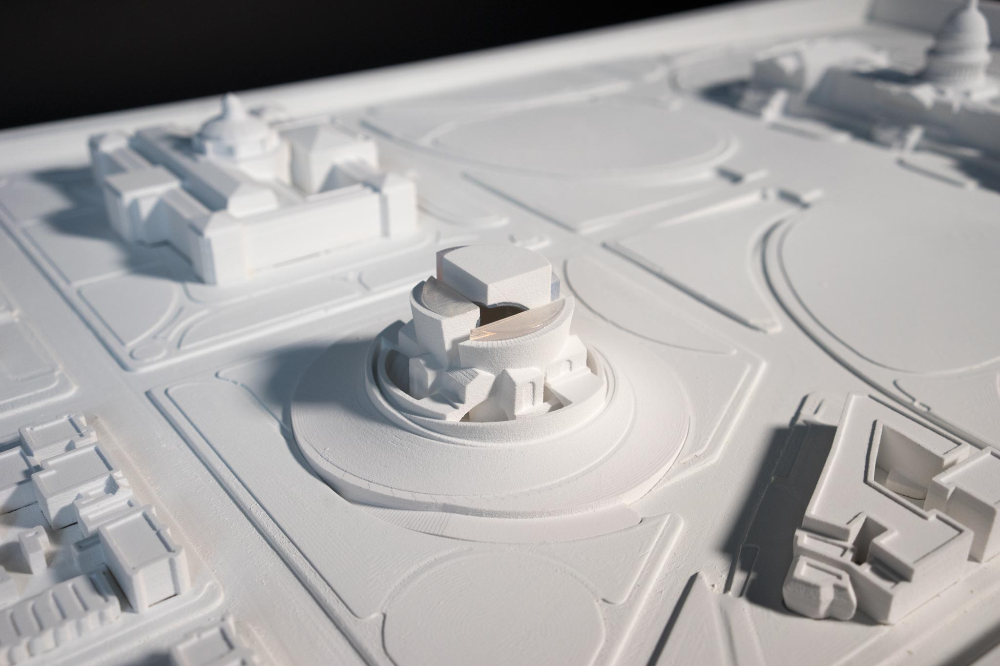
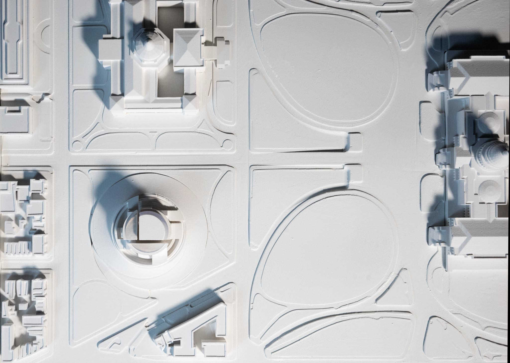
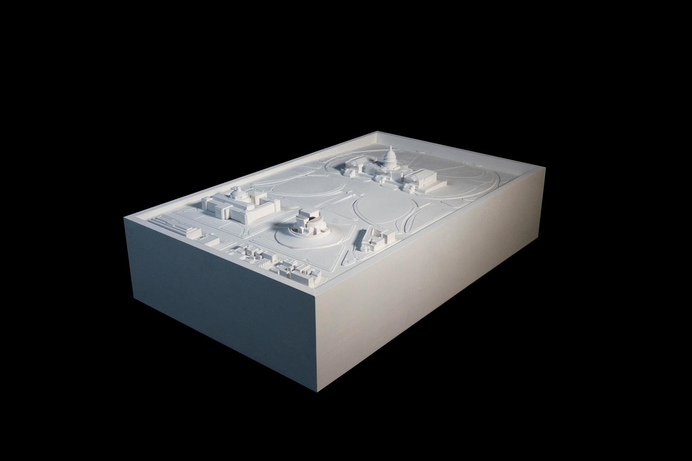
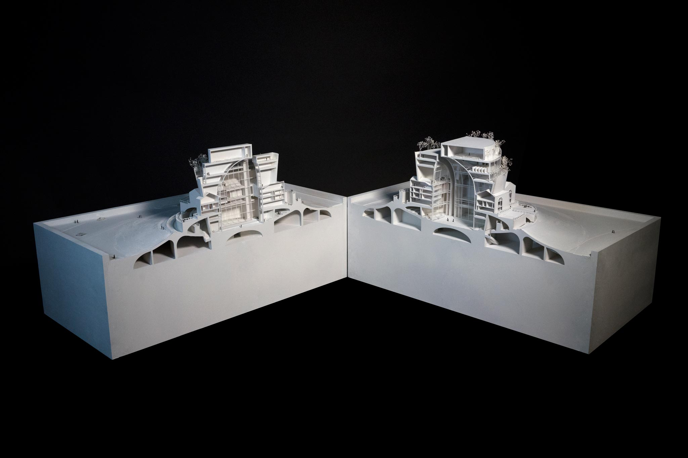
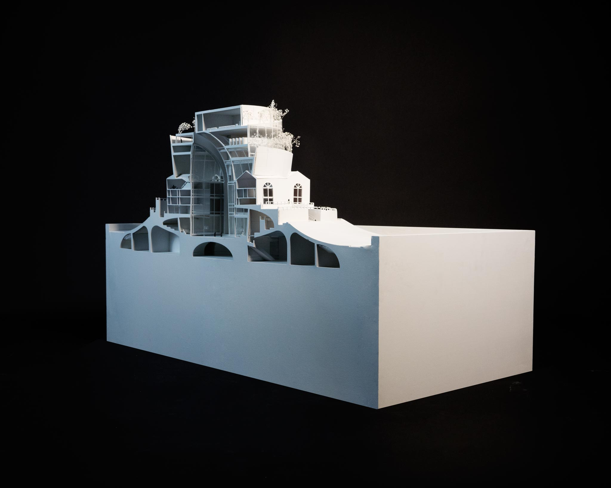

ABOUT THE PROJECT
Adviser: Mack Scogin
GSD MArch Thesis, January 2017
Through Sick and Sane
"I essentially am not in madness,
But mad in craft."
Hamlet Act III, Scene iv
What is madness? In the United States, the power of such judgment rests with the courthouse. In judging the sane from the insane, the normal from the aberrant, no entity is more germane than the Supreme Court. In fact, it is bound to engage with the aberrant, to set precedents, and to normalize contested situations.
Currently, the court is imbalanced due to the absence of a ninth justice. As such, It is suspended in a transient, aberrant state. This imbalance highlights the conflation of the body natural and the body politic of the court in the American political landscape. So, what might the Supreme Court, the building embodying both reason and grand illusions, look like in its current suspended state that not only reflects the sickness in its body natural (i.e. the death of a justice) but also mirrors the mass hysteria in its body politic?










